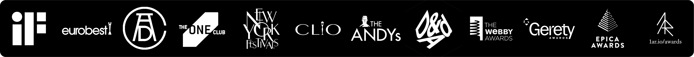

Analytical and visionary innovation and technology leader with a Master of Science degree in biomedical engineering and extensive experience in digital technology, IT project leadership, and digital transformation. Over a decade of experience bridging the gap between technology, product development and business strategy. Demonstrated success in pioneering projects and leveraging AI to drive growth and enrich the customer experience. Skilled at catalyzing collaboration across diverse teams and departments to synchronize technology efforts with business goals.
Notable projects include leading development of an award-winning iOS app Dot Go for the visually impaired, The Truth Wins campaign to navigate around censorship and sparking AI initiatives within the company, manifested by the most recent project - AI Eric, a relationship coach.
Previously engaged in biomedical technology, I contributed to neuroscience research by developing a spike sorting algorithm, and leading a project to improve palliative care through tech-enabled solutions. Alongside, I’ve always enjoyed sharing knowledge, be it through tutoring engineering subjects in the lab of my university, leading martial arts groups for kids and adults, or introducing collaborative digital tools for perpetual knowledge management to the co-workers.
I am thrilled about the boundless potential of human-machine symbiosis, and never stop exploring new ways to harness technology for meaningful solutions.
Areas of Expertise
- Strategic IT and Product Vision
- AI Integration and Leadership
- Innovation & Digital Transformation
- Leading & Execution Research & Development
- International Business & Relations
- Data-Driven Decision Making
- Idea-to-launch Product Development
- Client Engagement and Relationship Management
- Technical and Scientific Writing
- Public Speaking and Workshop Facilitation
List of skills is here.
Languages
- English: Fluent
- German: Fluent
- Russian: Native
Professional Experience
Hyperinteractive Innovation Studio
Fully remote team with headquarters in Hamburg, Germany
Creative Technologist
Hyperinteractive Innovation Studio | Oct 2021 - Feb 2024 (2 yrs 5 mos)
- Prepared comprehensive research documentation, ideation sessions, architecture design, technical evaluation, project timelines, and cost estimations, and presented those findings as pitches to clients for over 30 projects. About 50% of those projects were successfully executed, ensuring steady income for the company.
- Launched more than 15 projects as creative technologist and technical director for cross-functional teams, ensuring transparent client communication, timely delivery, and high-quality control.
- Projects with my direct participation as leader of multidisciplinary development units received over 50 international industry awards within 2 years of assignment, including iF Design Awards, Cannes Lions, Eurobest, New York Festival, Art Directors Club, etc., boosting the company’s market visibility. See full list of awards 1ar.io/awards.
- Integrated AI into 8 projects and pioneered the implementation of generative GPT-powered solutions, increasing user satisfaction by up to 80%.
- Initiated and nurtured a knowledge exchange program within the company, facilitated over 100 internal sessions, wrote 3 articles about cutting edge technologies for company’s blog, and led 3 external workshops with up to 100+ participants, leading to new business opportunities.
University of Applied Sciences
Giessen (Hesse), Germany Two promotions within 4.5 years of assignment
Information Technology Project Lead
University of Applied Sciences | Sep 2019 - May 2021 (1 yr 9 mos)
Led a Research & Development Unit of 18 team members in an Avenue-Pal consortium project, which was funded with €2 million, aimed at improving palliative care nationwide through tech-enabled solutions: Caregiver App and HelpDesk.
- Led the development of the Caregiver App, a mobile application for iOS and Android, which significantly simplified patient information capture in a compatible data exchange format and provided granular educational support for caregivers at various stages of palliative care by providing over 60 curated articles. The app was tested by over 10 individuals and evaluated by independent healthcare professionals as highly beneficial.
- Led the development of the HelpDesk, a web-based assistance platform for caring homes and hospitals, converting text-based guidelines into an actionable and dynamic system with over 857 items, which was evaluated as highly helpful by participating healthcare institutions.
- Engaged in project management and achieved the possibility to gradually grow the project team from 5 to 18 members, ensuring timely delivery and high-quality control.
- Organized the final symposium and delivered one of the keynotes about the project for 100+ participants, gathering high-profile governmental and scientific stakeholders from all parts of Germany.
- Contributed to more than 3 publications, capturing the outcomes of the Avenue-Pal project from technical, organizational, and sociological perspectives, ensuring the project’s visibility and potential for further funding.
Project Engineer
University of Applied Sciences | Dec 2018 - Aug 2019 (9 mos)
Concept design and prototyping of the Caregiver App and HelpDesk for the Avenue-Pal consortium project, aiming to enhance the quality of life of patients nationwide in their last life phase by improving the information flow between doctors and palliative experts and reducing the non-indicated patient transfers from 20% to 5%, which affects 150,000 individuals annually.
- Conducted user research and a 7+ expert review of the high-fidelity prototype for the solutions developed in the project, leading to 2 major iterations of reconceptualization for the initial idea, which helped significantly optimize the cost by ensuring the correct direction of development.
- Managed the procurement of 20+ pieces of equipment and 3 different software tools, ensuring a uniform development environment.
Research Associate and Tutor
University of Applied Sciences | Dec 2016 - Nov 2018 (2 yrs)
Member of the scientific group of Prof. Dr. Thomas Schanze, contributing to research in neuroscience and biological signal processing.
- Tutored 50+ students across 2 modules (“Digital Systems”, “Theory of Systems and Control Technology”), resulting in an 85%+ pass rate in practical examinations and marked improvements in students’ practical application skills.
- Author and co-author of 5 peer-reviewed scientific papers (read 642 times and cited 6 times) on spike sorting of neurological signals, published in national journals and presented at scientific conferences, ensuring an increase in the university’s scientific score and recognizability.
- Supervised 3 bachelor students in their thesis writing phase, organized practical experiments for 20+ master students, which promoted scientific activity and publication writing among young researchers.
- Assisted in the organization of two international scientific conferences, “Bioniq”, which were held at the university in Germany and in Cyprus, attracting over 150 attendees in total, ensuring the university’s visibility and potential for international cooperation between German and Iraqi students.
Additional Experience:
- Managing Director (Frankfurt am Main, Germany) | Veronica Medical Equipment Ltd. | Jun 2014 - May 2019 (5 yrs)
- International Sales Manager (Öskemen, Kazakhstan) | West-Trading (medical equipment, wholesale and technical support) | Jan 2013 - Jun 2014 (1 yr 6 mos)
- Sales Manager (Öskemen, Kazakhstan) | Tropicana Touristic Agency | Jan 2013 - Jun 2014 (1 yr 6 mos)
- Assistant Coach (Öskemen, Kazakhstan) | Öskemen Aikido & Kendo Martial Arts Dojo | 2011 (1 yr)
Education
M.Sc. Biomedical Engineering
University of Applied Sciences Mittelhessen | thm.de | 2017 - 2019
Grade: 1.4 (ECTS grading scale)
- Master’s thesis: “Spike Sorting of Multivariate Signals”, Grade: A, (1.1, 94%).
Developed an improved method of spike sorting for multichannel electrode arrays (also applicable for non-medial fields), which was published in a peer-reviewed journal and presented at a scientific conference. - *Honors & Awards: Awarded the DAAD scholarship for selected international Master students, showing notable academic achievements and potential.
- Activities: Member of the Institute of Biomedical Technology (IBMT). Participated in the Bioniq International Biomedical Summer School in Cyprus.
- Focus areas: biosignals, neuroscience, algorithms, biocybernetics, and prosthetics, aligning with current industry innovations in medical technology.
B.Sc. Biomedical Engineering
University of Applied Sciences Mittelhessen | thm.de | 2013 - 2017
Grade: 2.6 (ECTS grading scale)
- Bachelor’s Thesis: “Correlation Based Spike Sorting”, Grade: A (1.1, 94%)
Developed a lightweight, easy-to-use, and fast spike sorting algorithm based on the calculation of correlations of spikes’ waveforms, which was published in a peeer-reviewed journal and presented at a scientific conference. - Honors & Awards: Awarded the DAAD scholarship for selected international Bachelor students, showing notable academic achievements and potential.
- Activities: Contributed to the organization and success of the international “Bioniq” scientific conference. Took part and held presentation “Current Frontiers in Nuclear Reactors” at the scientific conference for students “Physics in the Healthcare”.
- Focus areas: microbiology, material science, programming
B.A. International Relations
Sarsen Amanzholov East-Kazakhstan State University | vku.kz | 2007 - 2012
Grade: B+, 3.56, 89% (USA grading scale)
- Bachelor’s Thesis: “International Partnership between Germany and Kazakhstan”, Grade: A, (4.00, 98%)
- Activities: engaged in the debate club and organized student events, developing strong communication, negotiation, and leadership skills.
- Focus areas: history, politics, regional management, diplomacy (conflict solving, ethics and protocols, international negotiations), foreign languages (English and German, Chinese)
Awards
2023
Dot Go App
- iF Design Award: Design Award (Communication/Apps/Software), Design Award (User Interface/Digital Media Interfaces)
- Clio Awards: 2 Silver (Digital/Mobile & Social Media Craft, Innovation), 2 Bronze (Creative Use of Data, Digital/Mobile)
- D&AD: 2 Graphite (Experiential/Use of MR, Direct/Innovation), Silver (Digital/Health & Wellbeing)
- Webby: Best Practices, People’s Voice Award (Apps, dApps and Software/Experimental & Innovation)
- ADC: Merit (Design for Good/Interactive)
- One Club: Gold (Innovation & Transformation, Online & Mobile), Silver (Augmented, Virtual & Mixed Reality), Bronze (Use of Technology), Merit (Digital Design)
- The Andy’s: 2 Gold (Reset, Idea)
The Truth Wins
- One Club: Silver (Social Post/Single Platform Series), 4 Merit (Various Categories)
- ADC: Bronze (Design for Good/Advertising - Single), 3 Merit (Various Categories)
- Clio Awards: 3 Silver (PR/Cause Related, Public Affairs, Social Media/Single Platform), Bronze (Digital/Mobile/Other)
2022
Dot Go App
- Cannes Lions: Silver (Brand Experience & Activation)
- New York Festivals: Gold (Innovation: Technology), 3 Silver (Best Innovation, Product Innovation, Apps)
- Epica Awards: Gold (Apps & Games), Silver (Creative Use of AI)
The Truth Wins
- Cannes Lions: Silver (PR Lions), Bronze (Sustainable Development Goals Lions)
- Eurobest: Gold (Media), 3 Bronze (Culture & Context, Social Engagement & Influencer Marketing, Social Insights & Engagement)
- Gerety Awards: Gold (Media Cut/Mobile), Silver (Work for Good Cut/Mobile), Bronze (Communication Cut/Mobile)
2021
Dot Go App
- Eurobest: Grand Prix (Innovation), Silver (Digital Craft)
Publications
-
Series of articles for Hyperinteractive Innovation Studio’s blog, 2024.
-
Scenarios of Dying a Digitalized Society
- In: How Will We Die in the Future?
- Publisher: Psychosozial-Verlag, Date: Sep, 2023
- Description: Exploration of the impacts of digitalization on individual, social, and institutional approaches to dying, death, and mourning by 2045. Scenario development for future organization of these aspects, presenting desirable perspectives, and identifying actionable steps.
- Larionov, P. (2023). “Wie werden wir in Zukunft sterben? Szenarien einer digitalisierten Gesellschaft,” pp. 297-312. ISBN print: 978-3-8379-3232-4, ISBN online: 978-3-8379-6105-8. DOI: doi.org/10.30820/9783837961058-297
- Project Website
-
Correlation-based Spike Sorting of Multivariate Data
- Publisher: De Gruyter, Date: Sep 18, 2019
- Larionov, P., Juergens, T. & Schanze, T. (2019). Current Directions in Biomedical Engineering, 5(1), pp. 113-116. DOI: 10.1515/cdbme-2019-0029
- Description: Introduced a novel method for automated classification of waveforms, particularly spikes recorded with multichannel electrode arrays, using principles of correlation and a Monte Carlo method for k-means clusters estimation.
-
Does Healthcare Research in Germany Need a Register of Places of Death?
- Publisher: Monitor Versorgungsforschung, Date: Jun 1, 2019
- George, W., Fritz, T., Papke, J., Weber, K., & Larionov, P. (2019). 12. 48-51. DOI: 10.24945/MVF.06.19.1866-0533.2191
- Description: Discussion on the need for a centralized register or database to track places of death in Germany, analyzing the potential benefits for quality management, health system design, and other stakeholders.
-
Adaption of a Spike Sorting Algorithm to ECG Signals
- Publisher: De Gruyter, Date: Sep 1, 2018
- Larionov, P., Janssen J.-D. and Schanze T. (2018). Biomedical Engineering / Biomedizinische Technik, Volume 63, Issue s1, Page 394. DOI: 10.1515/bmt-2018-6051
- Description: Adaptation of a previously published spike sorting algorithm for analyzing ECG signals, demonstrating potential for sorting and differentiating normal and anomalous P-waves, QRS-complexes, and T-waves.
-
Correlation Based Spike Sorting
- Publisher: Pabst Science Publishers, Date: Mar 16, 2018
- Larionov, P. and Schanze T. (2018). Automed 2018 - Villingen-Schwenningen, March 15-16, Automed 2018 in Villingen-Schwenningen Tagungsband, pp. 71-73.
- Description: Development of a resource-saving, easy-to-use, and fast spike sorting algorithm based on the calculation of correlations of spikes’ waveforms.